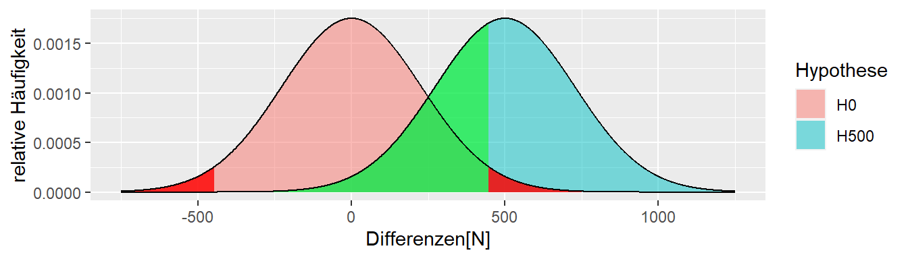
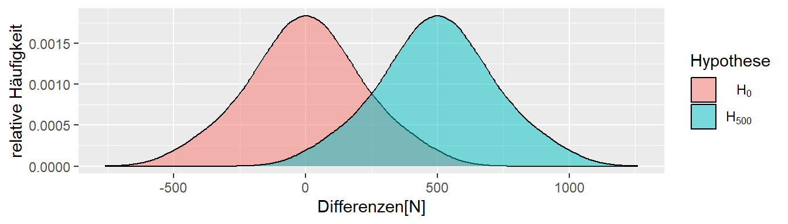

2 Statistische Signifikanz, p-Wert und Power
Im vorherigen Kapitel haben wir gesehen, wie Unsicherheit ein zentrales Problem bei der Interpretation von Ergebnissen von Experimenten oder Daten allgemein ist. Im nun folgenden Abschnitt wollen wir eine Prozess aufbauen, der es uns vor dem Hintergrund dieser Unsicherheit eine Entscheidung zu treffen.
2.1 Wie treffe ich eine Entscheidung?
In unserem kleine Welt Bespiel waren wir in der komfortablen Position, das wir genau wussten was passiert bzw. welcher Prozess unseren beobachteten Datenpunkt erzeugt hat. D.h wir kannten den datengenerieren Prozesses.
Definition 2.1 (Datengenerierender Prozess (DGP)) Der Prozess in der realen Welt der die beobachteten Daten und damit die daraus folgende Statistik erzeugt wird als datengenerierender Prozess bezeichnet.
Letztendlich zielt unsere Untersuchung, unser Experiment, darauf ab, Informationen über den DGP zu erhalten, weil diese Information uns erlaubt Aussagen über die reale Welt zu treffen. Dabei muss allerdings beachtet werden, dass dieser Prozess in den allermeisten Fällen ein starke Vereinfachung des tatsächlichen Prozesses in der Realität darstellt. Meistens sind die Abläufe in der Realität zu komplex um sie ins Gänze abzubilden. Somit wird fast immer nur ein Modell verwendet.
Zurück zu unseren Problem, wenn wir ein Experiment durchführen, dann haben wir normalerweise nur eine einzige beobachtete Statistik. In unseren bisherigen Beispiel also den berechneten Unterschied \(D\) in der Kraftfähigkeit nach der Intervention zwischen der Kontroll- und der Interventionsgruppe.
In Abbildung 2.1 ist der beobachtete Wert, \(D = 50\) abgetragen. Wir wissen von vorne herein, dass dieser Wert beeinflusst ist durch die zufällige Wahl der Stichprobe und die daran geknüpfte Streuung der Werte in der Population. Wie können wir den nun überhaupt eine Aussage treffen darüber, ob das Krafttraining was bringt oder vielleicht nur einen sehr kleinen Effekt zeigt oder möglicherweise sogar schädlich ist also zu einer Abnahme der Kraft führt?
Überlegen wir uns zunächst, welche Prozesse unseren beobachteten Wert zustande gebracht haben könnten. Wir haben schon zwei Prozesse kennengelernt, einmal den Prozess mit \(\Delta = 100\) wie auch den Prozess mit \(\Delta = 0\)

In Abbildung 2.2 ist wieder unser beobachteter Wert \(D = 50\) und die beiden Verteilungen abgetragen. Leider können wir nicht eineindeutig sagen, welche der beiden Verteilungen, bzw. deren zugrundeliegende Prozesse, unseren beobachteten Wert erzeugt haben könnte. Da unser beobachteter Wert \(D\) genau zwischen den beiden Maxima der Verteilungen liegt. Etwas motiviertes Starren auf die Abbildung wird uns allerdings auf die Idee bringen, dass der beobachtete Wert nicht nur von diesen beiden Verteilungen erzeugt worden sein muss, sondern durchaus noch mehr Verteilungen in Frage kommen.

Abbildung 2.3 zeigt, dass selbst die Verteilung mit \(\Delta = -250N\) und \(\Delta = 350N\) nicht unplausibel sind den beobachteten Wert erzeugt zu haben. Warum aber bei diesen fünf Verteilungen aufhören, warum sollte \(Delta\) nicht \(-50\) oder \(127\) sein. Und überhaupt, keiner kann behaupten die Natur kennt nur ganzzahlige Werte (siehe \(\pi\)). Warum sollte \(D\) also nicht auch \(123.4567N\) sein?
Wenn diese Überlegung weitergeführt wird, dann wird schnell klar, dass letztendlich eine unendliche Anzahl von Verteilung in der Lage ist unseren beobachteten Wert plausibel zu generieren. D.h. wir haben ein Experiment durchgeführt und den ganzen Aufwand betrieben und haben wochenlang mit unseren ProbandInnen Krafttraining durchgeführt und sind hinterher eigentlich keinen Schritt weiter da wir immer noch nicht wissen was der datengenerierende Prozess ist. Also können wir selbst nach dem Experiment nicht sagen ob unser Krafttraining tatsächlich wirksam ist.
Zum Glück werden wir später sehen, das unser Unterfangen nicht ganz so aussichtslos ist. Schauen wir uns zum Beispiel die Verteilung für \(\Delta = -350N\) an (Abbildung 2.4).

Unser beobachteter Wert unter der Annahme das \(\Delta = -350N\) ist nicht vollkommen unmöglich, aber so richtig wahrscheinlich erscheint er auch nicht. Der Wert liegt relativ weit am Rand der Verteilung. Die Kurve ist dort schon ziemlich nahe bei Null. D.h. der beobachtete Wert ist zwar durchaus möglich, aber es wäre schon überraschend wenn wir bei einer Durchführung des Experiments ausgerechnet so einen Wert beobachten würden wenn unsere angenommenes \(\Delta\) korrekt ist.
Wenn wir jetzt dagegen von der Annahme ausgehen, dass dem DGP der Wert \(\Delta = 50N\) zugrundeliegen würde, hätten wir die Verteilung in Abbildung 2.5. Zunächst ist dieser Wert möglich unter der Annahme. Zusätzlich liegt der beobachtete Wert mitten drin in dem Teil der Verteilung der auch zu erwarten wäre. D.h. der beobachtete Wert ist durchaus plausibel unter der Annahme und bei der einmaligen Durchführung des Experiments würde uns der beobachtete Wert nicht unbedingt überraschen.

Diesen Ansatz können wir verwenden um mit Hilfe unseres Experiments doch etwas über den DGP auszusagen. Allerdings müssen wir uns noch einmal etwas eingehender mit Verteilungen auseinandersetzen um z.B. genauer zu bestimmen welche Ergebnisse uns überraschen würden. D.h. wir müssen uns erst ein mal ein paar neue Konzepte erarbeiten.
2.2 Die Verteilung - 1. deep dive
Wir versuchen jetzt als erstes zu Verstehen was nochmal genau der Graph der Verteilung bedeutet. Auf der x-Achse werden die verschiedenen möglichen Werte der jeweiligen Statistik abgebildet. In unserem bisherigen Beispiel was das die Unterschiede \(D\) zwischen der Kontroll- und der Treatmentgruppe. Der Wert auf der y-Achse was zunächst die relative Häufigkeit was auch Sinn gemacht hatte, da wir nur eine bestimmte endliche Anzahl von möglichen Unterschieden \(D\) (ihr erinnert auch an die Zahl) vorliegen hatten. Was passiert aber wenn wir tatsächlich eine kontiuierliche Statistik haben, also eine Statistik die alle Werte innerhalb eines Intervalls einnehmen kann. Um den Fall zu verstehen fangen wir aber erst mal wieder mit einem einfachen Modell an.
2.2.1 Der Münzwurf
Wir fangen mit dem einfachsten Experiment an: dem Münzwurf. Beim Münzwurf haben wir zwei mögliche Ausgänge unseres Experiments, entweder Kopf oder Zahl. Wir gehen von einer perfekten Münze aus, d.h. die Münze ist vollkommen symmetrisch auf beiden System und keine der Seiten ist in irgendeiner Form schwere oder beeinflusst in einer Art den Ausgang.
Wenn wir uns an die Schule zurück erinnern, dann haben wir in Wahrscheinlichkeitstheorie schon mal was gehört, das im Fall gleichwahrscheinlicher Ereignisse die Wahrscheinlichkeit für ein bestimmtes Ereignis, mittels der Anzahl der vorteilhaften Ausgänge geteilt durch die Anzahl der möglichen Ausgänge berechnet wird. Also beim einmaligen Münzwurf haben wir zwei Ausgänge \(\{\text{Kopf}, \text{Zahl}\}\) und jeweils nur vorteilhaften Ausang als entweder Kopf oder Zahl, daher folgt daraus.
\[\begin{align} P(\text{Kopf}) &= \frac{1}{2} \\ P(\text{Zahl}) &= \frac{1}{2} \end{align}\]
Wenn wir das jetzt als Graphen in Form einer Wahrscheinlichkeitsverteilung abtragen, dann sieht das noch wenig interessant aus (siehe Abbildung 2.6). Das Muster ist aber trotzdem wichtig, damit wir später wissen worauf wir hier eigentlich schauen. Auf der x-Achse haben wir die möglichen Ausgänge, Kopf oder Zahl, und auf der y-Achse haben wir die Wahrscheinlichkeit abgetragen.
Da sich mit einem Münzwurf aber so wenig anfangen lässt, machen wir das Ganze jetzt etwas komplizierter und schauen uns an, wie unser Experiment aussieht wenn wir zwei Münzwwürfe uns anschauen. Rein operational, wir schmeißen unsere Münze in die Luft, schreiben uns das Ergebnis auf, und machen das Ganze noch ein zweites Mal und schreiben uns das Ergebnis auf. D.h. was auch immer im ersten Durchgang passiert, hat keine Auswirkungen auf das Ergebnis des zweiten Wurfs. Wir könnten auch zwei Münzen nehmen und beide gleichzeitig in die Luft werfen. Das wäre das gleiche Experiment. Welche Ausgänge haben wir jetzt beim zweimaligen Münzwurf? Zunächst einmal haben wir jetzt nicht mehr nur einen einzelnen Ausgang sondern wir haben ein Ausgangstupel, eine Liste mit zwei Elementen. Etwas motiviertes krizteln auf einem Schmierblatt wird wahrscheinlich relativ schnell zu folgender Tabelle führen (siehe Tabelle 2.1)
| Ausgang 1. Wurf | Ausgang 2. Wurf | Tupel |
|---|---|---|
| Kopf | Kopf | (Kopf, Kopf) |
| Kopf | Zahl | (Kopf, Zahl) |
| Zahl | Kopf | (Zahl, Kopf) |
| Zahl | Zahl | (Zahl, Zahl) |
Jetzt können wir uns wieder fragen, was die Wahrscheinlichkeit für die jeweiligen Ereignistupel ist. Eine direkte Methode wäre, wieder mittels der Symmetrie zu argumentieren. Es gibt vier verschiedene Ausgänge von denen jetzt keiner in irgendeiner Weise bevorzugt ist, daraus würde folgen das alle vier Ausgänge eine Wahrscheinlichkeit von \(P = \frac{1}{4}\) haben.
Eine weitere Möglichkeit wäre mit den Wahrscheinlichkeiten aus dem einfachen Wurf an das Problem heran zu gehen. Wir betrachten die beiden Münzwürfe jetzt wieder sequentiell (siehe Abbildung 2.7). Im ersten Schritt können wir entweder Kopf oder Zahl beobachten. Beide Wahrscheinlichkeiten sind \(P = \frac{1}{2}\). Darauf folgend können wir wieder zwei verschiedene Ausgänge beobachten, eben Kopf oder Zahl, wieder mit der Wahrscheinlichkeit \(P = \frac{1}{2}\).
flowchart TD
A[Start] --> B(Kopf)
A --> C(Zahl)
B --> D(Kopf)
B --> E(Zahl)
C --> F(Kopf)
C --> G(Zahl)
Da die Münzwürfe voneinander unabhängig sind und keinen Einfluss aufeinander ausüben, folgt daraus, dass die Wahrscheinlichkeiten für jede spezielle Folge von Kopf oder Zahl sich berechnet nach:
\[ P(\text{Ausgang}) = P(\text{1. Wurf}) \times P(\text{2. Wurf}) \tag{2.1}\]
Also in unseren Fall:
\[ P(\text{Ausgang}) = \frac{1}{2} \times \frac{1}{2} = \frac{1}{4} \tag{2.2}\]
Womit wir wieder beim gleichen Ergebnis wie vorher angekommen sind. Der Vorteil dieser Herangehensweise ist jedoch, dass wir damit eine einfache Möglichkeit gefunden haben das Ergebnis auf mehr als nur zwei Würfe zu verallgemeinern. Nehmen wir zum Beispiel den dreifachen Münzwurf, dann können wir die Wahrscheinlichkeit für die Folge \(P(\text{KKZ}) = \frac{1}{2}\times \frac{1}{2} \times \frac{1}{2} = \frac{1}{8}\) direkt angeben.
Bleiben wir aber erst noch mal kurz beim zweimaligen Münzwurf und schauen uns die Wahrscheinlichkeitsverteilung an. Hier stoßen wir nämlich auf ein Problem in der Darstellung. Wenn wir bei dem Muster aus Abbildung 2.6 bleiben wollen und auf der x-Achse die möglichen Ergnisse und auf der y-Achse die dazugehörende Wahrscheinlichkeit abtragen wollen, dann ist nicht ganz klar wie wir die Ergebnisse ordnen sollen. Eine mögliche Lösung ist in Abbildung 2.8 zu sehen.

Dies ist natürlich nicht die einzige Möglichkeit wie wir die Ereignisse ordenen können sondern wahrscheinlich ist jede der 24 möglichen Anordnungen gleich sinnig. Wir könnten auch beispielsweise nicht mehr die beiden einzelnen Ausgänge als Ereignisse wählen, sondern könnten zum Beispiel nur noch die Anzahl der Köpfe in unseren zwei Würfen zählen. Dies würde zu der folgenden Zuordnung führen (siehe Tabelle 2.2).
| Ereignisse | Anzahl der Köpfe |
|---|---|
| (Kopf, Kopf) | 2 |
| (Kopf, Zahl) | 1 |
| (Zahl, Kopf) | 1 |
| (Zahl, Zahl) | 0 |
Wir verliegen bei dieser Zuordnung nachtürlich die Information bei welchem Wurf die Zahl beobachtet wurde, aber eigentlich interessiert uns das sowieso nicht so brennend. In der Terminologie der Wahrscheinlichkeitstheorie wird die Anzahl der Köpfe als Zufallsvariable bezeichnet.
Definition 2.2 (Zufallsvariable) Eine Zufallsvariable ist die Abbildung eines Zufallsereignisses auf eine Zahl.
Anders dargestellt, ist eine Zufallsvariable eine Funktion, die einem Ereignis eine Zahl zuordnet (siehe Abbildung 2.9.
flowchart LR
A[Ereignis] --> B(Zahl)
Wenn wir uns jetzt die Wahrscheinlichkeiten für unsere Zufallsvariable anschauen, dann sehen wir aber, dass wir nicht mehr vier verschiedne Ausgänge haben, sondern nur noch drei und das die gleiche Wahrscheinlichkeit für nicht gleich sind.
| Ereignisse | Zufallsvariale | Wahrscheinlichkeit |
|---|---|---|
| (Zahl, Zahl) | Keine Köpfe | \(\frac{1}{4}\) |
| (Kopf, Zahl)(Zahl,Kopf) | 1 Kopf | \(\frac{1}{4} + \frac{1}{4} = \frac{1}{2}\) |
| (Kopf,Kopf) | 2 Köpfe | \(\frac{1}{4}\) |
Jetzt können wir wieder eine Wahrscheinlichkeitsverteilung für unsere Zufallsvariable abtragen (siehe Abbildung 2.10).
Nur um nebenbei noch einmal das offensichtliche Anzusprechen. Die Summe aller Wahrscheinlichkeiten aller Ereignisse muss \(1\) sein. Das sollte auch direkt einsichtig sein. Wenn ich alle möglichen Ereignisse abfrage also: “Was ist die Wahrscheinlichkeit das ich keine Köpfe, 1 Kopf oder 2 Köpfe beim zweimaligen Münzwurf erhalte”, dann sind das alle möglichen Ausgänge und dementsprechend sollte die Wahrscheinlichkeit dafür “1” sein oder mathematisch ausgedrückt:
\[ P(\text{0 Köpfe} \cup \text{1 Kopf} \cup \text{2 Köpfe}) = \frac{1}{4} + \frac{1}{2} + \frac{1}{4} = 1 \]
Jetzt gehen wir zum nächst komplizierteren Fall. Die Anzahl der Köpfe bei drei Münzwürfen. Welche Möglichkeiten gibt es hier? Nun bei drei Würfen kann entweder \(0, 1, 2\) oder \(3\) Kopf auftreten. Wenn wir die Wahrscheinlichkeiten für diese vier Ereignisse berechnen wollen, können wir aber nicht einfache \(\frac{1}{4}\) für jedes Ereignis als Wahrscheinlichkeit ansetzen (Warum?). Schauen wir uns erst einmal wieder die möglichen Tupel, oder auch die Elemenarereignisse, den wir erinnern uns, dass die Anzahl der Köpfe eine Zufallsvariable ist. Also eine Abbildung der 3-fach Tupel auf eine der Zahlen \(\{0, 1, 2, 3\}\).
| Elementarereignis | Anzahl Kopf |
|---|---|
| (Z,Z,Z) | \(0\) |
| (K,Z,Z) | \(1\) |
| (Z,K,Z) | \(1\) |
| (Z,Z,K) | \(1\) |
| (K,K,Z) | \(2\) |
| (Z,K,K) | \(2\) |
| (K,Z,K) | \(2\) |
| (K,K,K) | \(3\) |
Die Elementarereignisse in Tabelle 2.4 sind wieder alle gleichwahrscheinlich, daher können wir jetzt wieder einfache abzählen. Es gibt insgesamt \(8\) mögliche Ausgänge, davon haben jeiweils einer \(0\)-mal oder \(3\)-mal Kopf und jeweils \(3\) Ausgänge haben \(1\)-mal oder \(2\)-mal Kopf. Daraus folgt für die Wahrscheinlichkeitsfunktion (siehe Tabelle 2.5).
| Anzahl Kopf | P |
|---|---|
| \(0\) | \(\frac{1}{8}\) |
| \(1\) | \(\frac{3}{8}\) |
| \(2\) | \(\frac{3}{8}\) |
| \(3\) | \(\frac{1}{8}\) |
Das Ganze auch wieder als Graph (siehe ?fig-sts-coin-toss-3)
Bleiben wir noch einmal kurz bei dem Beispiel und versuchen uns die Wahrscheinlichkeiten anders herzuleiten. Sollten wir zum Beispiel einmal in die Verlegenheit kommen und 20 Münzwürfe untersuchen wollen, dann wir die Tabelle relative schnell relativ unhandlich.
Sei \(N\) die Anzahl der Würfe die wir durchführen. Wenn wir \(N\) kennen, wissen wir auch direkt welche möglichen Ausgänge bei dem Experiment möglich sind, nämlich alle Zahlen zwischen \(0\) und \(N\). \(0\) wenn wir kein Kopf geworfen haben, und \(N\) wenn wir nur Kopf geworfen haben. Dementsprechend sind alle Zahlen dazwischen auch noch möglich.
Schauen wir uns jetzt noch mal den dreimaligen Münzwurf an. Wenn wir kein Kopf werfen in \(3\) Würfen und betrachten die Würfe wieder sequentiell, dann haben wir \(\frac{1}{2}\) für die erste Zahl, \(\frac{1}{2}\) für die zweite Zahl und \(\frac{1}{2}\) für die dritte Zahl. Also insgesamt \(P(1 \text{ Kopf}) = \frac{1}{2} \times \frac{1}{2}\times \frac{1}{2} = \frac{1}{8}\). Aber diese Wahrscheinlichkeit hat ja jedes Elementarereignis egal ob es (K,K,K) oder (K,Z,K) oder (Z,Z,K) usw. ist. Jetzt haben wir aber das Problem, das wir für \(1\times\) oder \(2\times\) Kopf nicht nur eine Möglichkeit vorhanden diese Anzahl an Kopf zu beobachten. In Tabelle 2.4 haben wir bereits gezeigt, dass jeweils drei verschiedene Möglichkeiten, Kombination von Kopf und Zahl, möglich sind. D.h. wir haben jetzt ein Abzählproblem. Können wir irgendwie direkt bestimmen wie viele unterschiedliche Möglichkeiten es gibt?
Schauen wir uns den Fall \(1\times\) Kopf im 3-fach Tupel an. Auf wie viele Arten können wir 3-fach Tupel erzeugen mit nur einem Kopf. Nun, der Kopf ist entweder an der ersten, der zweiten oder der dritten Stelle und die jeweils anderen Position im Tupel sind mit Zahl besetzt. Das hört sich aber ähnlich wie ein Problem an wie wie etwas was wir schon vorher einmal gehört haben. Als wir uns die Anzahl der möglichen Stichproben aus unserer kleinen Welt angeschaut haben. Dort hatten wir das Problem, das wir bestimmen wollten auf wie viele Möglichkeiten wir zwei Stichproben mit jeweils drei Personen aus 20 Personen ziehen können. Dabei sind wir auf den Binomialkoeffizienten gestoßen Gleichung 1.3.
\[ \text{Anzahl} = \binom{n}{k} = \frac{n!}{k!(n-k)!} \]
Formal berechnet der Binomialkoeffizient die Möglichkeiten \(k\) Objekte aus \(n\) Objekten zu ziehen. Wenden wir das mal auf unseren Dreifachwurf an mit \(n = N = 3\) und \(k = 1\). Ausgeschrieben, auf wie viele Arten können wir \(1\times\) Kopf aus drei Positionen auswählen.
\[ \text{Kombinationen mit }1\times\text{ Kopf} = \binom{3}{1} = \frac{3!}{1!(3-1)!} = \frac{3\times 2 \times 1}{1\times 2 \times 1} = 3 \]
Passt. Probieren wir das auch direkt mit dem Ereignis \(2\times\) Kopf, also mit \(N = 3\) und \(k = 2\), aus.
\[ \text{Kombinationen mit } 2\times \text{ Kopf} = \binom{3}{2} = \frac{3!}{2!(3-2)!} = \frac{3\times 2 \times 1}{2\times 1 \times 1} = 3 \]
Passt auch. Jetzt müssen wir noch nur die beiden Fälle \(0\times\) und \(3\times\) Kopf behandeln. Wenn wir in einem Mathebuch den Binomialkoeffizienten nachschlagen, dann sind dort die beiden folgenden Definition zu finden für die Fälle \(k=0\) und \(k=n\).
\[\begin{align*} \binom{N}{N} &= 1 \\ \binom{N}{0} &= 1 \end{align*}\]
Wenn wir diese Definition für die anderen beiden verbleibenden Fälle anwenden, erhalten wir:
\[\begin{align*} \text{Kombinationen mit } 0\times \text{ Kopf} &= \binom{3}{0} = 1 \\ \text{Kombinationen mit } 3\times \text{ Kopf} &= \binom{3}{3} = 1 \end{align*}\]
Damit können wir nun für alle möglichen Ausgängen die Anzahl der möglichen Elementarereignisse mittels bestimmen. Allgemein erhalten wir dadurch eine Formel für die Wahrscheinlichkeiten der Ereignisse für den dreifachen Münzwurf.
\[ P(k \times \text{Kopf}) = \binom{3}{k} \frac{1}{2} \times \frac{1}{2} \times \frac{1}{2} = \binom{3}{k} \left(\frac{1}{2}\right)^3 \tag{2.3}\]
Weil wir natürlich sofort nach einer allgemeinen Lösung streben führen wir jetzt noch ein paar Symbole ein. Die Zufallsvariable, also die Anzahl von Kopf, bezeichnen wir mit dem Großbuchstaben \(Y\). Einen speziellen Ausgang bezeichnen wir mit dem Kleinbuchstaben \(y\). Damit würden allgemein die Wahrscheinlichkeit für irgend eines der Ereignisse mit \(Y = y\) bezeichnen. Und wenn wir sagen wir das Ereignis \(2\times\) Kopf bezeichnen, mit \(y = 2\). Also, die Wahrscheinlichkeit für \(3\times\) Kopf mit:
\[ P(Y = 3) = \binom{3}{3}\left(\frac{1}{2}\right)^3 \]
Die nächste Verallgemeinerung die wir Vornehmen ist dass wir für die Wahrscheinlichkeit das Kopf auftritt das Symbol \(p\) benutzen. So könnten wir auch modellieren, wenn wir eine unfaire Münze haben. Wenn jetzt aber \(p \neq \frac{1}{2}\) gilt, also zum Beispiel die Wahrscheinlichkeit für Kopf \(p = \frac{2}{3}\) wäre, dann ist die Wahrscheinlichkeit für Zahl nicht mehr die Gleiche wie für Kopf. Die Wahrscheinlichkeit für Zahl wäre dann \(1 - p\). Wenn wir für die Wahrscheinlichkeit für das Auftreten von Zahl das Symbol \(q\) einführen, muss die Wahrscheinlichkeit für Kopf oder Zahl gleich \(1\) sein, formal:
\[ p + q = 1 \] Daraus folgt, dass \(q = p - 1\). Wenn wir das auf unseren Münzwurf übertragen, müssen wir das dementsprechend berücksichtigen. Wir können uns aber zunutze machen, dass wir wissen wie viele Würfe durchgeführt wurden, nämlich \(N\), und wie viele davon Kopf waren, nämlich \(y\). Damit wissen wir automatisch auch die Anzahl von Zahl, \(N - y\). Jede Kopf, hat die Wahrscheinlichkeit \(p\) und jede Zahl hat die Wahrscheinlichkeit \(q = 1 - p\) und das gilt unabhängig von der Reihenfolge, da z.B. \(ppqp = qppp\) ist. Insgesamt haben wir \(y \times p\) und \((n-y) \times q\) also \(p^y\) und \(q^{n-y}\). Das können wir jetzt alles in eine Formel stecken.
\[ P(Y = y) = \binom{N}{y}p^y (1-p)^{N-y} = \binom{N}{y}p^y q^{N-y} \tag{2.4}\]
Damit haben wir jetzt auch direkt unsere erste mathematische Verteilung kennengelernt, die in der Statistik eine zentrale Rolle spielt, die Binomialverteilung. Es handelt sich hier um eine Familie von Verteilungen, da jeweils für verschiedene \(N\) und \(p\) eine eigene Verteilung vorliegt. Schauen wir uns aber noch mal ob wir mit den ganzen Symbolen wirklich unseren dreifachen Münzwurf zurückbekommen. Es gilt \(N = 3, p = \frac{1}{2}\). Daraus folgt das \(q = 1 - p = 1 - \frac{1}{2}=\frac{1}{2}\). Wenn wir uns jetzt noch an \(x^a x^b = x^{a+b}\) aus der Schule erinnern folgt:
\[\begin{align*} P(Y = 0) &= \binom{3}{0} \left(\frac{1}{2}\right)^{0}\left(\frac{1}{2}\right)^3 = \binom{3}{0}\left(\frac{1}{2}\right)^3 = 1 \left(\frac{1}{2}\right)^3 \\ P(Y = 1) &= \binom{3}{1} \left(\frac{1}{2}\right)^{1}\left(\frac{1}{2}\right)^2 = \binom{3}{1}\left(\frac{1}{2}\right)^3 = 3 \left(\frac{1}{2}\right)^3 \\ P(Y = 2) &= \binom{3}{0} \left(\frac{1}{2}\right)^{2}\left(\frac{1}{2}\right)^1 = \binom{3}{2}\left(\frac{1}{2}\right)^3 = 3 \left(\frac{1}{2}\right)^3 \\ P(Y = 3) &= \binom{3}{0} \left(\frac{1}{2}\right)^{3}\left(\frac{1}{2}\right)^0 = \binom{3}{3}\left(\frac{1}{2}\right)^3 = 1 \left(\frac{1}{2}\right)^3 \\ \end{align*}\]
2.2.2 Lage- und Skalenparameter
In Abbildung 2.3 sind verschiedene Verteilungen abgebildet die sich eigentlich nur in ihrer Position bzw. Lage unterscheiden. Der Parameter der bei einer Verteilungen die Lage steuert ist der Mittelwert den wir bereits schon kennengelernt haben. Hier jetzt aber nicht der Mittelwert \(\bar{x}\) in der Stichprobe, sondern der Mittelwert der zugrundeliegenden Population der dann mit dem Symbol \(\mu\) bezeichnet wird. Die Beschreibung als Parameter der Verteilung heißt nichts anderes das die Verteilung von \(\mu\) abhängt, oder formal das die Verteilung eine Funktion von \(\mu\) ist. Wenn wir uns an Funktionen aus der Schule zurück erinnen wo wir Funktionen \(f\) von \(x\) kennengelernt haben und als \(f(x)\) dargestellt haben. Übertragen auf die Verteilung könnte dies mittels \(f(\mu)\) dargestellt werden.
Nehmen wir nun zwei Verteilungen die sich bezüglich ihrer Mittelwerte \(\mu\) unterscheiden. Zum Beispiel sei \(\mu_1 = 0\) und \(\mu_2 = 3\). Wie in Abbildung 2.12 zu sehen ist, führt dies dazu, das die beiden Verteilungen gegeneinander verschoben sind.

Der Mittelwert \(\mu\) der Verteilung wird auch als Erwartungswert bezeichnet. Dies kann dahingehend interpretiert werden, das wenn Stichproben aus dieser Verteilungen gezogen werden, im Mittel der Wert \(\mu\) erwartet wird. Soweit ist dies eigentlich noch nichts wirklich Neues, sondern hatten dies schon vorher gesehen, als wir alle möglichen Unterschiede zwischen der Kontrollgruppe und der Interventionsgruppe ermittelt haben. Hier war der Mittelwert der Verteilung genau derjenige Wert von \(\Delta\).
An dieser Stelle sollte nochmal der Unterschied zwischen \(\mu\) und \(\bar{x}\) klargestellt werden. Der Mittelwert \(\mu\) ist eine Eigenschaft der Population, also letztendlich ein Wert den wir niemals kennen werden ohne die gesamte Population zu untersuchen. Der Mittelwert \(\bar{x}\) ist eine Eigenschaft der Stichprobe aus der Population. Also der konkrete Wert den wir anhand der Stichprobe berechnen. In vielen Fällen versuchen wir über \(\bar{x}\) einen Rückschluss auf \(\mu\) zu ziehen.
Als zweite Eigenschaft von Verteilungen schauen wir uns jetzt die Streuung in der Population an. Die Streuung in der Population wird als Varianz bezeichnet und wird mit dem Symbol \(\sigma^2\) bezeichnet. Schauen wir uns zunächst an, welchen Einfluss \(\sigma^2\) auf die Form der Verteilung hat. In Abbildung 2.13 sind wieder zwei Verteilungen abgetragen. Dieses Mal ist \(\mu\) in beiden Fällen gleich, aber die Varianzen \(\sigma\) sind mit \(\sigma_1^2 = 2\) und \(\sigma_2^2=1\) unterschiedlich.

2.3 Formeln
n := Anzahl der Stichprobenelemente, \(x_i\) := Messwerte
2.4 Nebenbei: Warum der Mittelwert Sinn macht
2.5 Mit der Verteilung die annimmt das nichts passiert!

2.6 Signifikanter Wert

Wenn der Stichprobenwert der Statistik in der kritischen Region auftritt, dann wird von einem statistisch signifikanten Effekt gesprochen. Unter der \(H_0\) bin ich überrascht diesen Wert zu sehen!
2.7 Der p-Wert

2.8 p-Werte
Der p-Wert gibt die Wahrscheinlichkeit für den gefundenen oder einen noch extremeren Wert unter der \(H_0\) an.

2.9 p-Werte
“[A] p-value is the probability under a specified statistical model that a statistical summary of the data (e.g., the sample mean difference between two compared groups) would be equal to or more extreme than its observed value.” (Wasserstein und Lazar 2016, p.131)
“[T]he P value is the probability of seeing data that are as weird or more weird than those that were actually observed.” (Christensen 2018, p.38)
2.10 Signifikanter Wert - Das Kleingedruckte
- Vor dem Experiment wird für ein \(H_0\) ein \(\alpha\)-Level angesetzt (per Konvention \(\alpha=0,05 = 5\%\))
- Anhand des \(\alpha\)-Levels können kritische Werte (\(k_{lower}, k_{upper}\)) bestimmt werden. Diese bestimmen die Grenzen der kritischen Regionen.
- Wenn der gemessene Wert w der Statistik in die kritische Region fällt, also \(w \leq k_{lower}\) oder \(w \geq k_{upper}\) gilt, dann wird von einem statistisch signifikanten Wert gesprochen und die dazugehörige Hypothese wird abgelehnt. Äquivalent: Der p-Wert ist kleiner als \(\alpha\).
- Da in \(\alpha\)-Fällen ein Wert in der kritischen Region auftritt, auch wenn die \(H_0\) zutrifft, wird in \(\alpha\)-Fällen ein \(\alpha\)-Fehler gemacht.
2.11 Signifikanter Wert - Das Kleingedruckte
- Wenn der Wert w der Statistik nicht in den kritischen Regionen liegt, oder gleichwertig der p-Wert größer als \(\alpha\) ist, wird die \(H_0\) beibehalten. D.h. nicht, dass kein Effekt vorliegt, sondern lediglich, dass anhand der Daten keine Evidenz diesbezüglich gefunden werden konnte!
- Die statistische Signifikanz sagt nichts über die Wahrscheinlichkeit der Theorie aus!
- Ein p-Wert von \(p = 0.0001\) heißt nicht, dass mit 99,99% Wahrscheinlichkeit ein Effekt vorliegt!
- Statistisch signifikant heißt nicht automatisch praktisch relevant!
2.12 Nochmal, wenn die \(H_0\) nicht abgelehnt wird

2.13 Nochmal p-Wert (Wasserstein und Lazar (2016))
- P-values can indicate how incompatible the data are with a specified statistical model.
- P-values do not measure the probability that the studied hypothesis is true, or the probability that the data were produced by random chance alone.
- Scientific conclusions and business or policy decisions should not be based only on whether a p-value passes a specific threshold.
- Proper inference requires full reporting and transparency
- A p-value, or statistical significance, does not measure the size of an effect or the importance of a result.
- By itself, a p-value does not provide a good measure of evidence regarding a model or hypothesis.
2.14 Was passiert nun aber wenn die “andere” Hypothese zutrifft?

2.15 Wir machen einen \(\beta\)-Fehler!
2.16 Snap!(1989) - The Power

2.17 Terminologie noch mal
- \(\alpha\): Die Wahrscheinlichkeit sich gegen die \(H_0\) zu entscheiden, wenn die \(H_0\) zutrifft. \(\alpha\)-Level wird vor dem Experiment festgelegt um zu kontrollieren welche Fehlerrate toleriert wird.
- \(\beta\): Die Wahrscheinlichkeit sich gegen die \(H_1\) zu entscheiden, wenn die \(H_1\) zutrifft.
- Power := \(1 - \beta\): Die Wahrscheinlichkeit sich für die \(H_1\) zu entscheiden, wenn die \(H_1\) zutrifft. Sollte ebenfalls vor dem Experiment festgelegt werden.
2.18 Wie können wir die Power erhöhen?
2.19 Stichprobengröße von n = 3 auf n = 9 erhöhen?

2.20 Standardfehler
Die Standardabweichung der Statistik wird als Standardfehler \(s_e\) bezeichnet2. Der Standardfehler ist nicht gleich der Standardabweichung in der Population bzw. der Stichprobe. Es gilt für den Mittelwert:
3 Parameterschätzung
3.1 Problem bei einer dichotomen Betrachtung der Daten

3.2 Wie groß ist der Effekt?

3.3 Schätzung der Populationsparameter
Kleine Welt: Experiment wird einmal mit n = 9 durchgeführt
3.3.1 Beobachtete Stichprobenkennwerte
\[\begin{align*} d = \bar{x}_{treat} - \bar{x}_{con} &= 350 \\ s &= 132 \\ s_e &= 44 \end{align*}\]
Wie präzise ist meine Schätzung und welche anderen Unterschiedswerte sind anhand der beobachteten Daten noch plausibel?
3.4 Welche \(\delta\)s sind plausibel für \(d = 350\)?

Plausibel unter einem gegebenem \(\alpha\)-Level!
3.5 Alle möglichen \(\delta\)s die plausibel sind

3.6 Was passiert wenn ich das Experiment ganz oft wiederhole?

3.7 Konfidenzintervall - Das Kleingedruckte
- Das Konfidenzintervall für ein gegebenes \(\alpha\)-Niveau gibt nicht die Wahrscheinlichkeit an mit der der wahre Parameter in dem Intervall liegt.
- Das Konfidenzintervall gibt alle mit den Daten kompatiblen Populationsparameter an.
- Das \(\alpha\)-Niveau des Konfidenzintervalls gibt an bei welchem Anteil von Wiederholungen davon auszugehen ist, das das Konfidenzintervall den wahren Populationsparameter enthält.
3.8 Konfidenzintervall herleiten nach Spiegelhalter (2019, p.241)
- We use probability theory to tell us, for any particular population parameter, an interval in which we expect the observed statistic to lie with 95% probability.
- Then we observe a particular statistic.
- Finally (and this is the difficult bit) we work out the range of possible population parameters for which our statistic lies in their 95% intervals. This we call a “95% confidence interval”.
- This resulting confidence interval is given the label “95%” since, with repeated application, 95% of such intervals should contain the true value.3
All clear? If it isn’t, then please be reassured that you have joined generations of baffled students.
3.9 Konfidenzintervall berechnen (Vorschau)
\[ \textrm{CI}_{1-\alpha} = \bar{x} \pm z_{\alpha/2} \times s_e \]
3.10 Dualität von Signifikanztests und Konfidenzintervall
Wenn das Konfidenzintervall mit Niveau \(1-\alpha\%\) die \(H_0\) nicht beinhaltet, dann wird auch bei einem Signifikanztest die \(H_0\) bei einer Irrtumswahrscheinlichkeit von \(\alpha\) abgelehnt.